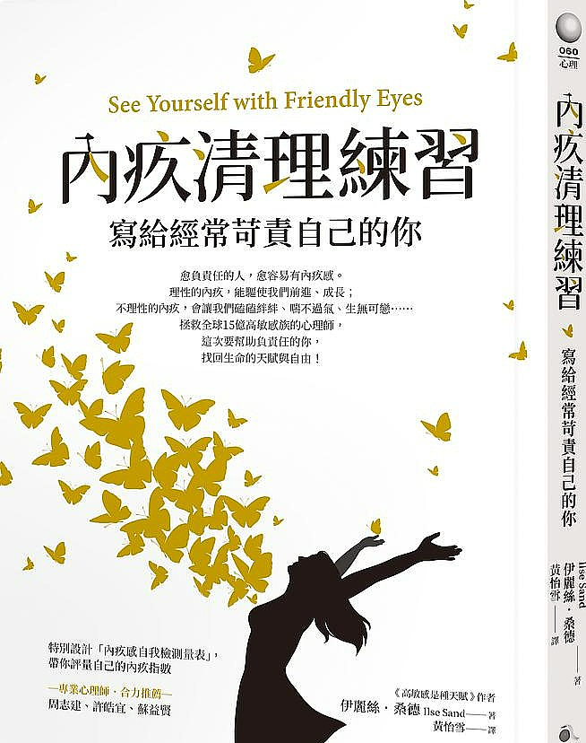
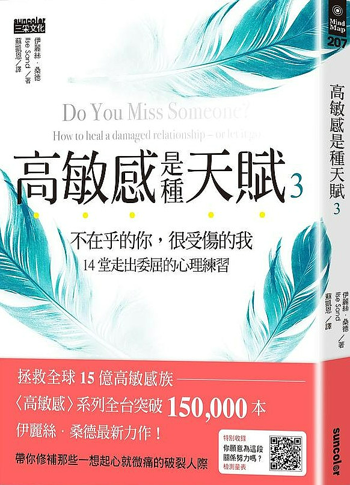
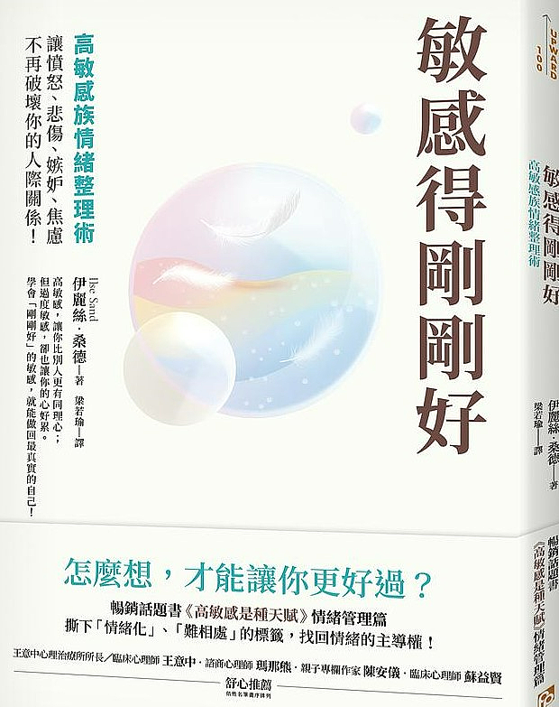
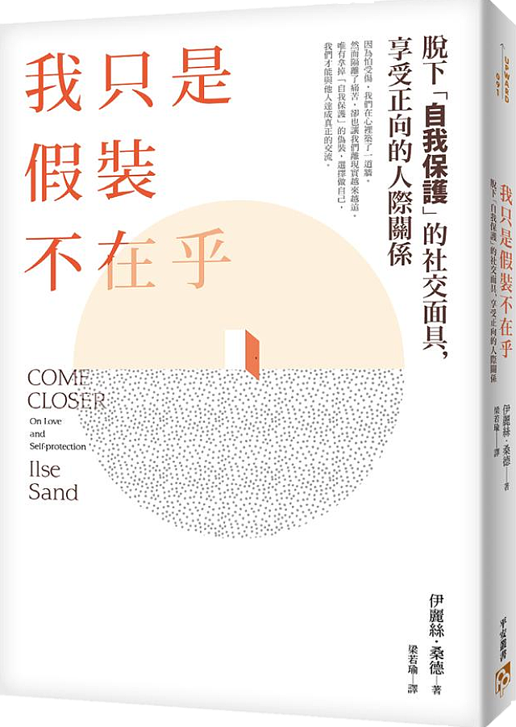
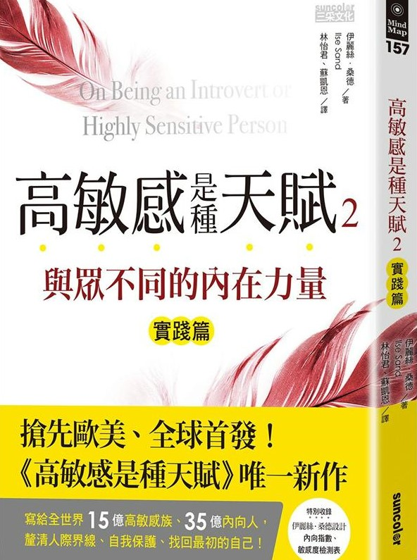
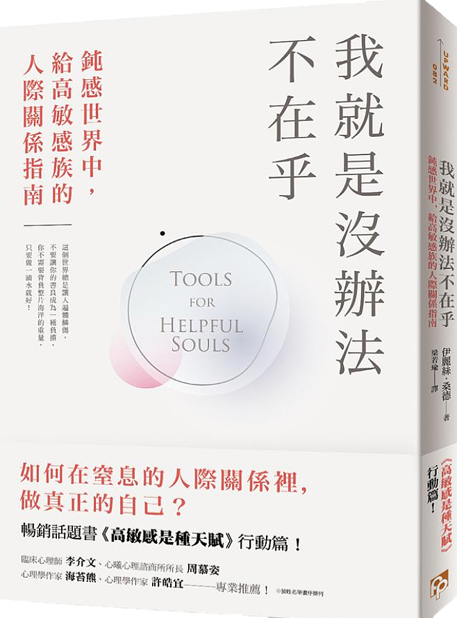
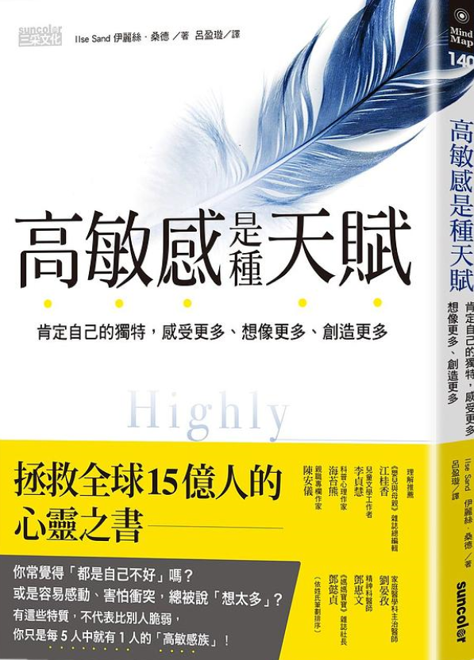
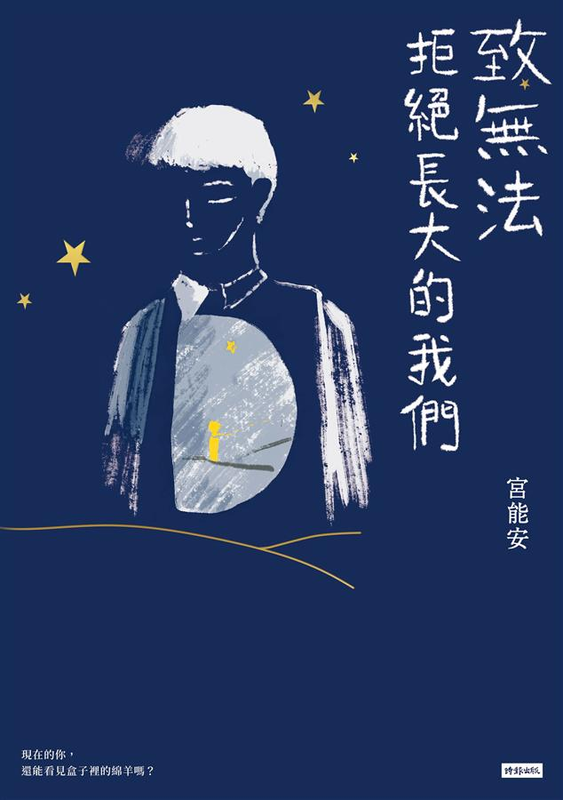

類型
散文
圖文
心理勵志
關於我們
會員中心
登入
註冊
會員資料
購物車
/伊麗絲·桑德
作者:伊麗絲·桑德
本名:伊麗絲·桑德
心理治療師，
丹麥奧胡斯大學神學碩士，
碩士論文以卡爾．榮格與
齊克果為主要研究。
身為高敏感族的一員，
更了解高敏感族的
心情與苦處。
接受各類心理療法的
專業訓練，
現為丹麥心理治療學會會員，
並在丹麥國家教會擔任
教區牧師近十一年，
現從事心理諮商督導、
培訓講師、專業講者
與心理諮商師。

內疚清理練習
寫給經常苛責自己的你

高敏感是種天賦3

敏感得剛剛好

我只是假裝不在乎

高敏感是種天賦2

我就是沒辦法不在乎

高敏感是種天賦
/宮能安
作者:宮能安
本名:宮能安
一名演員，為了維持生活，
曾經進入校園擔任表演藝術老師，
過往在國中教室裡分享
《小王子》的課程意外演化成
《地球人遇見小王子》
的單人演說劇場，
從2016年巡迴至今
已逾500多場次，
觀賞對象也從國中擴展至
高中、大學與社會人士不等，
目前足跡遍及
臺灣、中國、美國各地。

致無法拒絕長大的我們